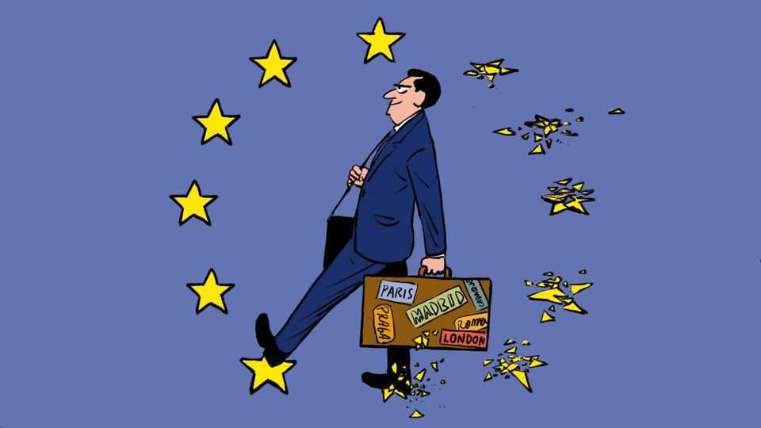

Gallivanting EU politicians reveal where power really lies
Inside the Grand Tour of 27 European capitals

Aug 27th 2026
The proper way to complete a young British gentleman’s education, in centuries gone by, was to send him on a Grand Tour of the continent. A traipse through Europe taking in Parisian salons, Milanese opera houses and Roman ruins was just the thing to turn an unkempt youth into a cultivated courtier. Over the months en route, he would pick up rudiments of the continent’s languages alongside a few paintings, gambling debts and the odd bout of gonorrhea. The Grand Tour was expensive and time-consuming, which was rather the point: what mattered was not so much seeing Europe as being seen to have seen it. For the family that had everything, a youngster’s gap year on the continent broadened the mind even as it narrowed the inheritance.
The democratisation of travel and the French habit of chopping off aristocratic heads put paid to the custom. But the Grand Tour has had a revival of sorts, not among the idle rich but among the continent’s political class. For the modern grandee serving the European Union, to be seen as out on the road is de rigueur. Nothing demonstrates commitment to ever-closer union so well as a circuit on the Grand Tour 2.0: a zip through the EU’s 27 national capitals, from mighty Berlin and Paris to humble Valletta and Luxembourg. Much like the jaunts of yore, such traipsing is expensive, time-consuming and undertaken largely for symbolic value. Then as now, the intent is less to learn anything than to prove one has made the effort. Been there, done that.
The latest politico to try his hand at frequent-flyer diplomacy is António Costa, who as president of the European Council chairs confabs of EU leaders. For the second year running the former Portuguese prime minister will schlep to chancelleries across the bloc on a tour des capitales. In 2025 it took three weeks for Mr Costa to accumulate grip-and-grins from 23 EU members. This time 26 stops are planned (Sweden, in the midst of elections, will have to wait). For a man whose job is to herd two dozen leaders towards agreement, rushing through two or three capitals a day has a certain logic. But a slew of lesser EU-wallahs have done their own travel box-ticking, in a revival of the Grand Tour genre. At least four European commissioners have visited all 27 countries since taking office in December 2024, with a handful of others aiming to notch up the remaining capitals soon. National politicians too are occasionally tempted by the challenge: Emmanuel Macron undertook a Grand Tour in his first five years as French president.
Completing the EU-capitals set has become the Eurocratic equivalent of filling a Panini sticker album. Brussels-based types may think of the habit as an earnest effort by the vast EU apparatus to solicit the views of the provincial Everymen for whom they are devising policies. That is doubtful. Unlike the junior aristos on the OG Grand Tour, today’s visiting Euro-dignitaries encounter few ordinary citizens (and probably contract less gonorrhea). Beyond the odd farmer dragooned into a photo-op or students forced to endure pontificating speeches, it is mainly national-level politicians who get to meet roaming EU bigshots. The exercise may be billed as a listening tour, but it is one in which the listeners studiously avoid the electorate.
What is the point of all this, beyond accumulating air-miles? After all, most polities designate a capital city where folk from the provinces congregate to meet and get stuff done. The EU has a serviceable one, Brussels, where its main institutions are based. Ministers serving national governments from Poland to Portugal shuffle in and out every week (except in most of August; this is Europe, after all). A permanent cadre of senior national diplomats plugged into their respective governments spend their time in a more or less continuous co-ordination meeting. Yet despite these institutionalised communication channels, the Euro-pilgrimage continues. There is something wonderfully European about an official travelling to Ljubljana to have a conversation that could easily have happened a week later in Brussels.
Grand Tours were once a common feature of the EU. National leaders used to take six-month turns chairing meetings of their fellow prime ministers, and would knock on each chancellery’s door in the run-up to their first summit in charge. Such a jaunt could be done and dusted in a couple of days when the union was first formed in the 1950s, taking in just six countries. But the practice fell into abeyance. From 2009 a new permanent presidency (currently held by Mr Costa) stopped the practice of rotating ones at leader level, and so the impetus to travel. The bloc’s expansion by the 2000s to 28 members (for a while) turned visiting every national capital into an endurance test too trying for most.
The recent resurgence of the Grand Tour reveals something about how Europe is run. In most governments, politicians from the provinces travel to the capital to lobby. In Europe it is the other way round. Policymaking is at times centralised at EU level—but power stems from national capitals. Eurosceptics may yammer about an out-of-control cadre of Brussels officials running amok, but the opposite is closer to the truth. National governments decide what they want to see happen, and get the machinery in Brussels to do their bidding. Eurocrats who travel outwards are, if not bending, at least flexing the knee to Europe’s true sovereigns.
To the EU project’s purists, who would like more decisions made in Brussels, its officials’ wanderlust is a depressing reminder of how little power they wield. Perhaps the practice will fall into abeyance again. Enlargement of the EU is on the agenda; on August 29th Icelanders will vote on whether to apply for membership. Several Balkan countries are applying, as is Ukraine. A trip to 27 capitals is already exhausting. A detour to Reykjavík, Kyiv or Sarajevo may prove a bridge too far. ■